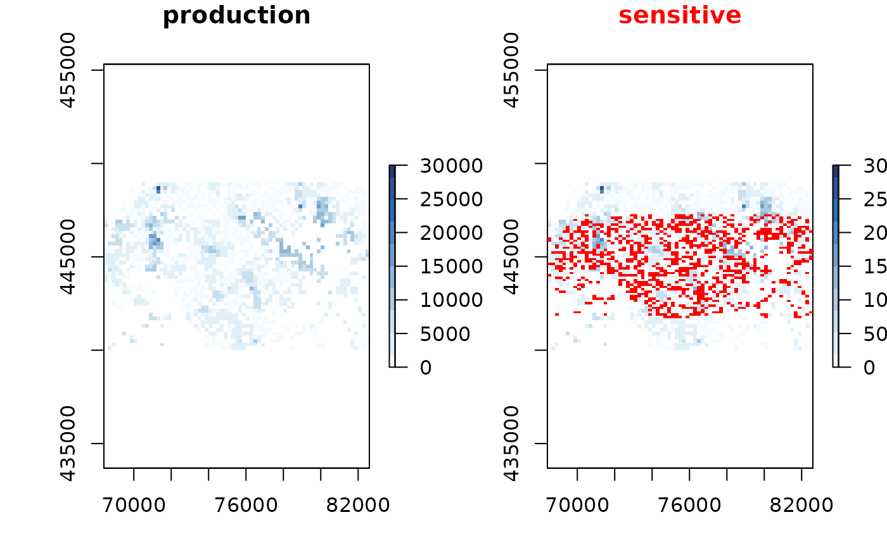
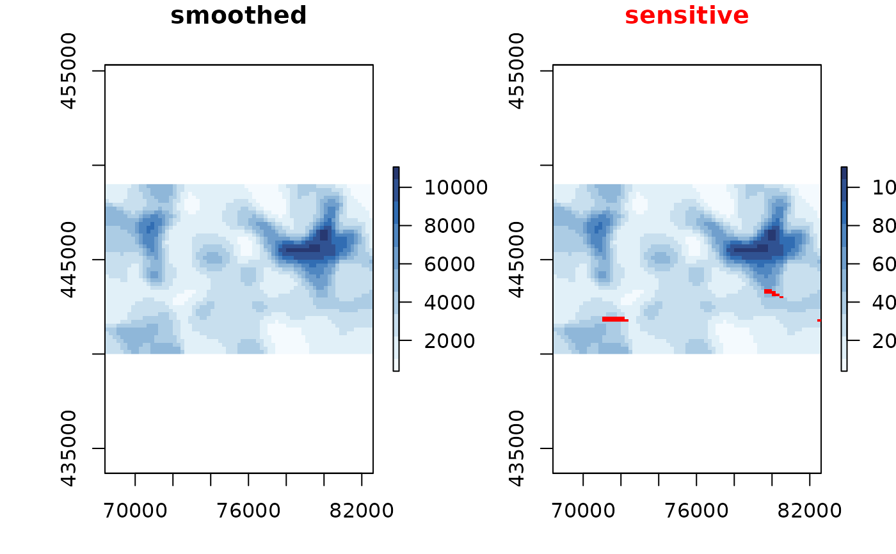
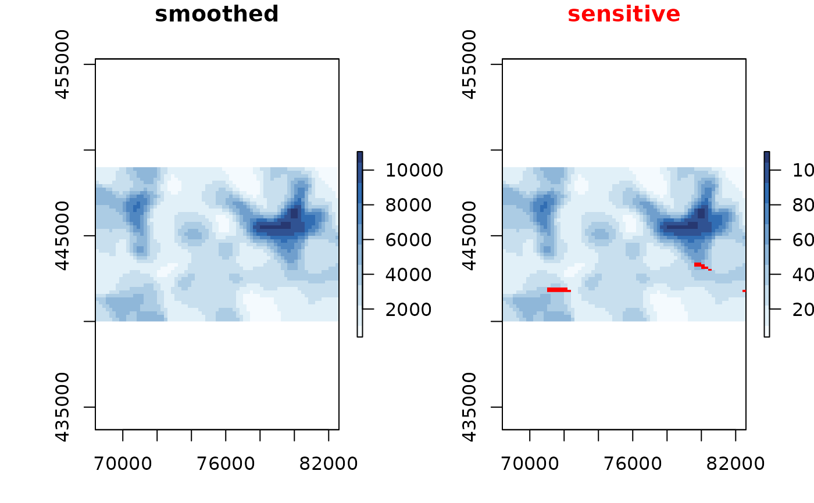
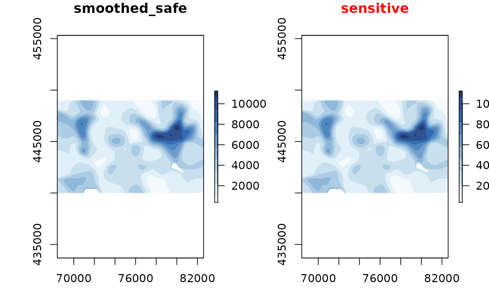
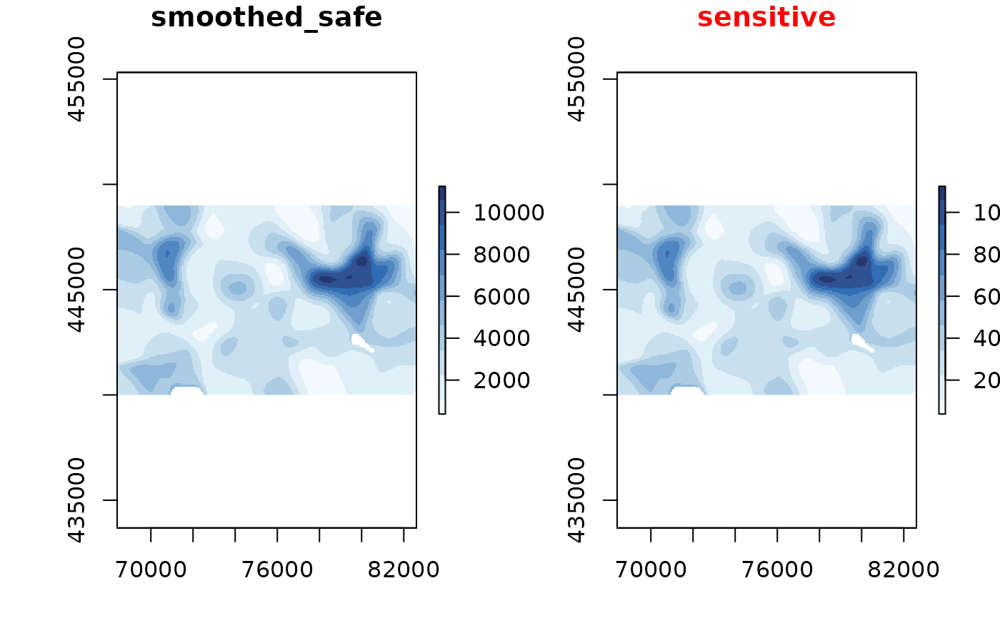

protect_smooth reduces the sensitivity by applying a Gaussian smoother,
making the values less localized.
Usage
protect_smooth(x, bw = raster::res(x$value), ...)Arguments
- x
raster object
- bw
bandwidth
- ...
passed through to
focal.
Details
The sensitivity of a raster can be decreased by applying a kernel density smoother as
argued by de Jonge et al. (2016) and de Wolf et al. (2018). Smoothing spatially spreads
localized values, reducing the risk for location disclosure. Note that
smoothing often visually enhances detection of spatial patterns.
The kernel applied is a Gaussian kernel with a bandwidth bw supplied by the user.
The smoother acts upon the x$value$count and x$value$sum
from which a new x$value$mean is derived.
References
de Jonge, E., & de Wolf, P. P. (2016, September). Spatial smoothing and statistical disclosure control. In International Conference on Privacy in Statistical Databases (pp. 107-117). Springer, Cham.
de Wolf, P. P., & de Jonge, E. (2018, September). Safely Plotting Continuous Variables on a Map. In International Conference on Privacy in Statistical Databases (pp. 347-359). Springer, Cham.
See also
Other protection methods:
protect_quadtree(),
remove_sensitive()
Examples
# \donttest{
library(sdcSpatial)
library(raster)
data(enterprises)
# create a sdc_raster from point data with raster with
# a resolution of 200m
production <- sdc_raster(enterprises, variable = "production"
, r = 200, min_count = 3)
print(production)
#> numeric sdc_raster object:
#> resolution: 200 200 , max_risk: 0.95 , min_count: 3
#> mean sensitivity score [0,1]: 0.6328234
# plot the raster
zlim <- c(0, 3e4)
# show which raster cells are sensitive
plot(production, zlim=zlim)

# but we can also retrieve directly the raster
sensitive <- is_sensitive(production, min_count = 3)
plot(sensitive, col = c('white', 'red'))
 # what is the sensitivy fraction?
sensitivity_score(production)
#> [1] 0.6328234
# or equally
cellStats(sensitive, mean)
#> [1] 0.6328234
# let's smooth to reduce the sensitivity
smoothed <- protect_smooth(production, bw = 400)
plot(smoothed)

# let's smooth to reduce the sensitivity, with higher resolution
smoothed <- protect_smooth(production, bw = 400, smooth_fact=4, keep_resolution=FALSE)
plot(smoothed)
# what is the sensitivy fraction?
sensitivity_score(production)
#> [1] 0.6328234
# or equally
cellStats(sensitive, mean)
#> [1] 0.6328234
# let's smooth to reduce the sensitivity
smoothed <- protect_smooth(production, bw = 400)
plot(smoothed)

# let's smooth to reduce the sensitivity, with higher resolution
smoothed <- protect_smooth(production, bw = 400, smooth_fact=4, keep_resolution=FALSE)
plot(smoothed)
 # what is the sensitivy fraction?
sensitivity_score(smoothed)
#> [1] 0.007902973
# let's remove the sensitive data.
smoothed_safe <- remove_sensitive(smoothed, min_count = 3)
plot(smoothed_safe)

# let's communicate!
production_mean <- mean(smoothed_safe)
production_total <- sum(smoothed_safe)
# and create a contour plot
raster::filledContour(production_mean, nlevels = 6, main = "Mean production")
# what is the sensitivy fraction?
sensitivity_score(smoothed)
#> [1] 0.007902973
# let's remove the sensitive data.
smoothed_safe <- remove_sensitive(smoothed, min_count = 3)
plot(smoothed_safe)

# let's communicate!
production_mean <- mean(smoothed_safe)
production_total <- sum(smoothed_safe)
# and create a contour plot
raster::filledContour(production_mean, nlevels = 6, main = "Mean production")
 # generated with R 3.6 >=
#col <- hcl.colors(11, rev=TRUE)
col <- c("#FDE333", "#C2DE34", "#7ED357", "#00C475", "#00B28A", "#009B95"
, "#008298", "#006791", "#274983", "#44286E", "#4B0055"
)
raster::filledContour(production_total, nlevels = 11
, col = col
, main="Total production")
# generated with R 3.6 >=
#col <- hcl.colors(11, rev=TRUE)
col <- c("#FDE333", "#C2DE34", "#7ED357", "#00C475", "#00B28A", "#009B95"
, "#008298", "#006791", "#274983", "#44286E", "#4B0055"
)
raster::filledContour(production_total, nlevels = 11
, col = col
, main="Total production")
 # }
# }